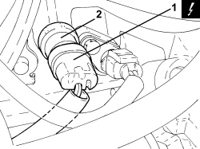
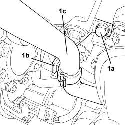
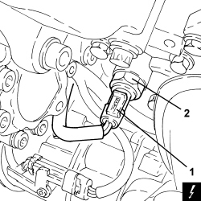
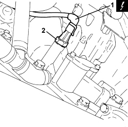

1084A42 ENGINE OIL PRESSURE WARNING LIGHT SWITCH - R + R
- Path
- Procedures > 10 ENGINE > 1084 ENGINE LUBRICATION > 1084A INDICATORS/CHECK DEVICES > 1084A42 ENGINE OIL PRESSURE WARNING LIGHT SWITCH - R + R
- Kind
- repair procedure (removal / refitting; the operation number is the code)
- Applies to
- all engines; all production periods
- Interactive page
- https://sloeber94.github.io/elrnDB-aBrrSpdr/en/#/946001989
Applies to: engines: 2.2 JTS; all production periods
 Removing
Removing
 Refitting
Refitting- Make sure that the ignition key is in the OFF position, then disconnect the battery terminal (-).
Description | Connector | |
|---|---|---|
- | Battery |
1. Disconnect the electrical connection for the engine oil pressure warning light switch.
Description | Connector | |
|---|---|---|
1 | Insufficient engine oil pressure sensor |
2. Remove the engine oil pressure warning light switch.

Applies to: engines: 2.2 JTS; all production periods
Refitting
Removing- Replace the engine oil pressure warning light switch in its housing and tighten it to the recommended torque.
Component | Fastening | dia | Value (daNm) | Validity |
|---|---|---|---|---|
Switch for engine oil pressure warning light | - | M12 | 1.8 | 1.9 JTS 2.2 JTS 3.2 JTS |
- Connect the electrical connection to the engine oil pressure warning light switch.
- Connect the negative battery terminal.
Applies to: engines: 3.2 JTS; all production periods
Removing
RefittingOp. 1016A10 SOUND-PROOFING COVER - R.R
1. Undo the bolt (1a) securing the bracket (1b) for the engine oil heat exchanger coolant outlet pipe (1c).

Applies to: engines: 3.2 JTS; all production periods
1. Disconnect the electrical connection for the engine oil pressure warning light switch.
Description | Connector | |
|---|---|---|
1 | Engine oil pressure sensor (switch) |
2. Undo and remove the engine oil pressure warning light switch.

Applies to: engines: 3.2 JTS; all production periods
Refitting
Removing- Replace the engine oil pressure warning light switch in its housing and tighten it to the recommended torque.
Component | Fastening | dia | Value (daNm) | Validity |
|---|---|---|---|---|
Switch for engine oil pressure warning light | - | M12 | 1.8 | 2.2 JTS 3.2 JTS |
- Connect the electrical connection to the engine oil pressure warning light switch.
- Tighten the bolt securing the bracket for the engine oil heat exchanger coolant outlet pipe.
Applies to: engines: 2.4 JTD 20v; all production periods
Removing
Refitting- Position the vehicle on a lift.
- Make sure that the ignition key is in the OFF position, then disconnect the battery terminal (-).
Op. 7055B54 UNDER ENGINE PROTECTION/GUARD - R.R.
1. Disconnect the electrical connection from the engine oil pressure warning light switch.
Description | Connector | |
|---|---|---|
1 | Insufficient engine oil pressure sensor (switch) |
2. Undo and remove the engine oil pressure warning light switch.

Applies to: engines: 2.4 JTD 20v; all production periods
Refitting
Removing- Replace the engine oil pressure warning light switch in its housing and tighten it to the recommended torque.
Component | Fastening | dia | Value (daNm) | Validity |
|---|---|---|---|---|
Switch for engine oil pressure warning light | - | M14 | (support side) 2.3 - 2.8 | 2.4 JTD 20V |
- Connect the electrical connection to the engine oil pressure warning light switch.
Op. 7055B54 UNDER ENGINE PROTECTION/GUARD - R.R.
- Connect the negative battery terminal.
- Remove the vehicle from the lift.
Topics linked from this page (4)
- 1016A10 SOUND-PROOFING COVER - R.R
- 7055B54 UNDER ENGINE PROTECTION/GUARD - R.R.
- A001 BATTERY
- K030 ENGINE OIL PRESSURE SENSOR (SWITCH)
Topics that link to this page (7)
- 0510C20 ENGINE LUBRICATION SYSTEM - CHECK SUPPLY PRESSURE
- E5030 PETROL ENGINE ELECTRONIC MANAGEMENT - WIRING DIAGRAM
- E5030 PETROL ENGINE ELECTRONIC MANAGEMENT - COMPONENT LOCATION
- E5030 PETROL ENGINE ELECTRONIC MANAGEMENT - WIRING DIAGRAM
- E5030 PETROL ENGINE ELECTRONIC MANAGEMENT - COMPONENT LOCATION
- E5050 DIESEL ENGINE ELECTRONIC MANAGEMENT - WIRING DIAGRAM
- E5050 DIESEL ENGINE ELECTRONIC MANAGEMENT - COMPONENT LOCATION